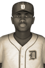

|
|
|  | Detroit Southpaw Tosses 10-0 Shutout Saturday, May 17th, 1930 Punkorn McKinzie of the Detroit Lions spun his magic on the Minnesota Saints today. He blanked them 10-0 on 5 hits, registering 4 strikeouts and 4 walks. "The bottom line was I just kept the ball down," McKinzie said. "My breaking stuff was down. Everything was down." Talking to reporters in the postgame interview, Detroit skipper Jake Downing said the team "got solid pitching, good defense and took great team at-bats in a lot of different situations." "Punkorn pitched really well but this was a solid performance by everyone," he said. View Boxscore |   |